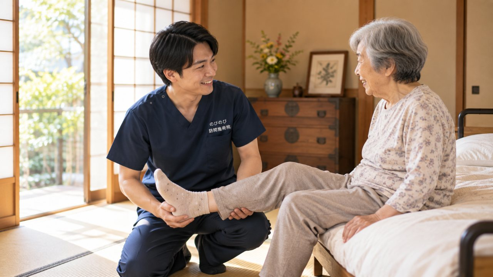
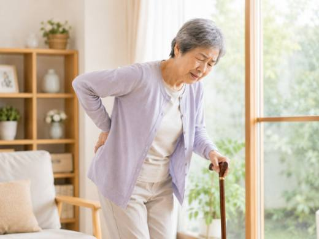

立ち上がるときにズキッとする、歩き始めの一歩がつらい、階段の下りがこわい。膝の痛みは、そのまま外出や通院の負担にもつながります。摂津市にお住まいで、加齢による変形性膝関節症などの膝の不調をかかえるご本人やご家族に向けて、訪問鍼灸マッサージに何ができて、何ができないのかを整理しました。原因の見きわめは整形外科の役割ですが、そこを土台にできる補助もあります。
かいつまんで言うと、膝の痛みの診断と治療は、まず整形外科などの医師が中心です。すり減った軟骨や進んだ変形は元には戻せず、効果には個人差もあります。訪問鍼灸マッサージができるのは、痛みをかばって硬くなった膝・太もも・お尻をゆるめ、血のめぐりを促すお手伝いです。通院が困難で医師が施術を必要と認めた場合、医療保険で受けられます。1回の総額3,950円に対し、1割負担でおよそ395円が目安です。
摂津市で膝の痛みに向き合う、通わなくていい施術という選び方
買い物や通院の途中で、膝がつらくて立ち止まってしまう。そんな経験はありませんか。膝の痛みを抱えていると、外出そのものがおっくうになりがちです。のびのび訪問施術院は、JR千里丘駅や阪急正雀駅の周辺、大阪モノレールの摂津駅・南摂津駅の沿線を含む摂津市全域へ、施術者がご自宅までお伺いします。無理に通院しなくても、住み慣れたお部屋で膝のケアを続けられる、そんな選択肢があることをまず知っていただきたいのです。
膝の痛みは我慢すれば済むもの、と思われがちですが、動かさずにいると筋力も可動域も少しずつ落ちていきます。早いうちから、生活の場でできる対策を始めることに意味があります。
立ち座り・階段・正座、その一つひとつがつらくなる前に
膝の痛みで最初に困るのが、椅子やトイレからの立ち座り、そして階段の上り下りです。変形性膝関節症などで軟骨がすり減ってくると、朝起きたときのこわばりや、動き始めのズキッとした痛み、膝まわりの腫れや、曲げ伸ばしの範囲が狭くなる可動域制限が少しずつ重なってきます。正座ができなくなって法事や来客が気まずい、という声も摂津市のご利用者からよく伺います。こうした一つひとつのつらさについては膝の痛みで立ち座りがつらい方へのページで詳しく掘り下げていますので、思い当たる方はあわせてご覧ください。
痛みをかばって動かさずにいると、太ももの前側の筋力が落ち、その弱った筋肉が膝をさらに不安定にする、という悪循環に入りやすいのが膝の厄介なところです。この輪をどこかで断ち切る視点が欠かせません。
外出が減る前に、動きを保つための機能訓練を
膝が痛いから出かけない、出かけないから足腰が弱る。この流れが続くと、使わないことで機能が落ちる廃用が進み、気づけば家の中の移動さえ心細くなってしまいます。別府や正雀の周辺でも、以前は買い物に歩いて行けたのに、という方によくお会いします。訪問での施術では、膝まわりや太ももの筋肉へのマッサージで血流やこわばりに働きかけながら、その方の状態に合わせた機能訓練を組み合わせ、今ある動きをできるだけ保つことを大切にしています。関節を治すのではなく、動ける生活を手放さないための伴走、とお考えいただくとイメージしやすいかもしれません。
ただし、これらの施術は病気そのものを治すものではありません。膝の状態は人によって異なり、効き方には個人差があることも、あらかじめお伝えしておきます。
医療保険で受けられる仕組みと、気になる料金のこと
膝の痛みに対する訪問施術は、膝をかばって出る腰や脚の痛みや、関節の拘縮にともなう痛みについて医師が施術を必要と認めた場合に、はり・きゅうの医療保険（療養費）でお受けいただけます。利用には医師の同意書が必要ですが、要介護認定は不要です。介護保険の限度額とは別枠のため、デイサービスなどを利用中の方でも併用できます。なお、同一部位について医療保険のリハビリと鍼灸を同じ月に同時算定することはできない点だけご留意ください。ちなみに医療保険のはり・きゅうで対象となるのは神経痛・リウマチ・頸肩腕症候群・五十肩・腰痛症・頸椎捻挫後遺症の6疾病です。
料金は1回の施術で総額3,950円、自己負担は1割の方で約395円が目安です。週2回の場合、1割の方で月約3,160円ほど。機能訓練は含み、摂津市のエリア内は出張費なし・料金一律です。これらについて別途の料金はいただきません。仕組みの詳しい説明は料金はいくら？医療保険の自己負担額と仕組みにまとめています。
摂津市のどこまで来てもらえる？まずはご相談ください
千里丘・鳥飼・味舌・別府をはじめ、摂津市の広い範囲へお伺いしています。ご自宅が対応エリアに入るかどうかは対応エリアはどこまで来てもらえる？でご確認いただけますし、摂津市での訪問施術全般については摂津市の訪問鍼灸マッサージもあわせてご覧ください。膝の痛みは、早く手をつけるほど今の動きを保ちやすくなります。同意書のことがよく分からない、という段階でも構いませんので、どうぞお気軽にお声がけください。
よくある質問
摂津市のどのあたりまで来てもらえますか？
千里丘・鳥飼・味舌・別府の周辺から、正雀、南摂津など摂津市内を広くうかがっています。詳しい地域は、お問い合わせの際にご確認ください。エリア内であれば別途の出張費はかからず、どこでも同額です。
膝の変形があっても受けられますか？
慢性的な膝の痛みについて医師が鍼やお灸を必要と認め、通院が負担であれば保険の対象になります。すり減った軟骨や変形が元に戻るわけではありませんが、膝まわりのこわばりを和らげる補助はできます。感じ方には個人差があります。
膝に水がたまっているのですが、施術できますか？
水がたまっているときは、抜くかどうかも含めて医師の判断が土台になります。まず整形外科にご相談ください。そのうえで、施術では膝まわりや太もものこわばりを負担にならない範囲で和らげ、膝を支える力を保つお手伝いをします。
転んだあとの膝の痛みはどうすればいいですか？
強く痛む、腫れる、熱をもつ、体重をかけられないときは、整形外科を優先してください。骨や関節の中のトラブルが隠れていることがあるためです。医師の診断を受けたあとであれば、状態に合わせた補助を行えます。
1回いくらかかりますか？
自宅での1回の施術は総額3,950円で、1割負担の方はおよそ395円が目安です。1割の方が週1回受ける場合、ひと月の自己負担はおよそ1,580円ほど。公的な医療保険にもとづく正規の料金です。手技や身体を動かす運動は、鍼灸に加えるケアとして行います。これらについて別途の料金はいただきません。
要介護認定を受けていなくても利用できますか？
はい。医療保険と要介護認定は別のしくみです。認定を受けていない方でも、医師の同意があればご利用になれます。費用は介護保険の区分支給限度額とは別枠なので、ケアプランの上限には影響しません。
寝たきりや車いすでも受けられますか？
はい。ベッドや車いすの上など、その方の楽な姿勢に合わせて施術します。体勢や刺激の強さも体調に合わせて調整します。施設へうかがうこともできますので、ご担当者からのご相談も歓迎しています。
同意書などの手続きは自分で用意するのですか？
いいえ。保険を使うために必要な医師の同意書の段取りは、のびのび訪問施術院が手伝います。かかりつけの医療機関をお聞かせいただければ、こちらで調整を進めますので、ご負担は少なく始められます。

摂津市で坐骨神経痛・腰から足の痛みにお悩みの方へ｜自宅で受けられる訪問鍼灸マッサージ
続きを読む
摂津市でパーキンソン病の在宅ケアを探している方へ｜訪問鍼灸という選択肢
続きを読む摂津市で肩の痛み・五十肩にお悩みの方へ｜腕が上がらないつらさを支える訪問鍼灸
続きを読む
摂津市の訪問鍼灸マッサージ｜通院がつらくなっても、住み慣れた家で腰・足のケアを続けられます
続きを読む
伊丹市で膝の痛みにお悩みの方へ｜自宅で受ける訪問鍼灸マッサージ
続きを読む